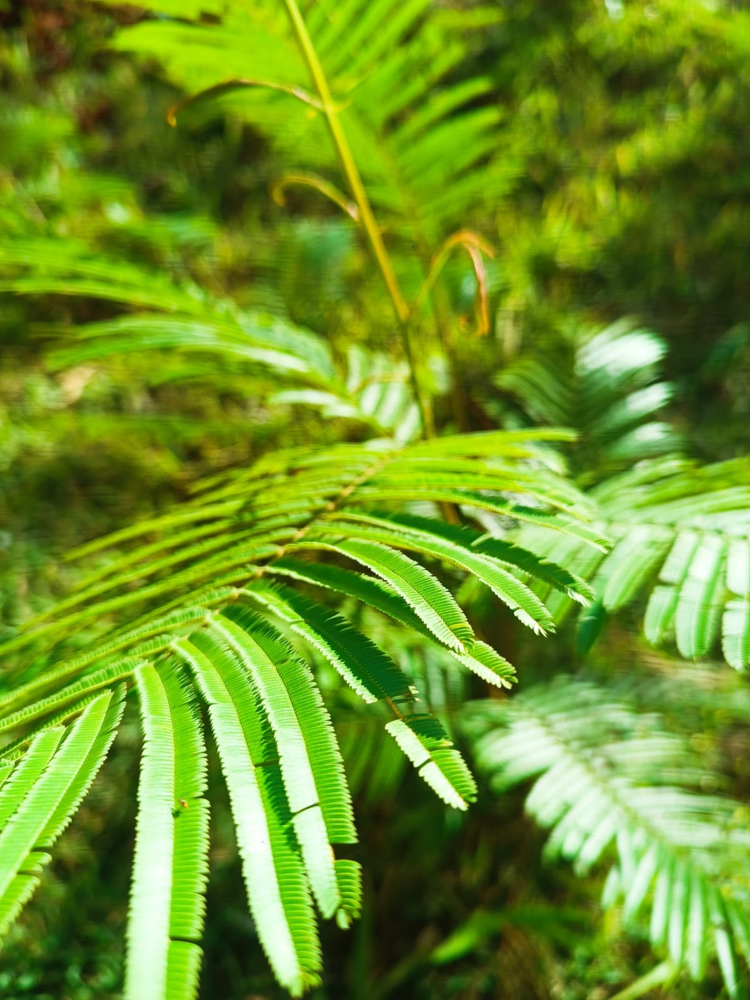

Informações da Planta
Nome científico: Pentaclethra macroloba
Nome popular: Pracaxi
Família: Fabaceae
Origem: Florestas tropicais da Amazônia
Nome científico: Pentaclethra macroloba
Nome popular: Pracaxi
Família: Fabaceae
Origem: Florestas tropicais da Amazônia
O óleo extraído das sementes de Pracaxi é amplamente utilizado na indústria cosmética, devido às suas propriedades hidratantes e cicatrizantes. Ele é conhecido por ajudar no tratamento de pele e cabelo, além de ser utilizado para fins medicinais pelas populações indígenas da Amazônia.